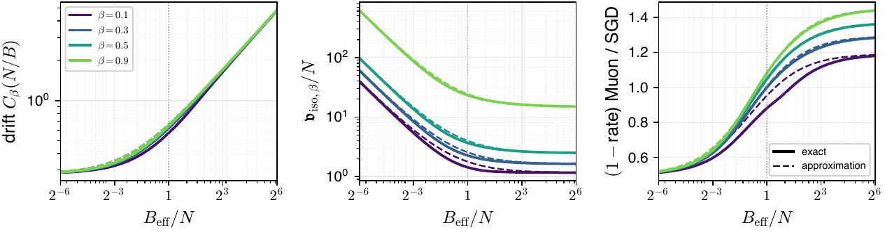

SK Numerical simulations for Figures 3, 4 and 6
This appendix describes the simulations behind Figs. 3, 4 and 6 and the checks of the approximations (9). Nothing in it is used in a proof.
Model and algorithms. All runs use the square isotropic model with \(\Nin=\Nout=N=512\) and \(\Sigmain=\Sigmaout=\Id_N\). At an error \(\Delta=W-W^\star\), a batch of size \(B\) gives the gradient
\[
G=\frac1B\sum_{b=1}^B x_{\rm out}^b\otimes x_{\rm in}^b\,\big\langle x_{\rm out}^b\otimes x_{\rm in}^b,\Delta\big\rangle,
\qquad \EE\,G=\Delta,\qquad \cR=\tfrac12\norm{\Delta}_\F^2 .
\]
Muon keeps the buffer \(M_t=\bmom M_{t-1}+(1-\bmom)G_{t+1}\) and steps \(W_{t+1}=W_t-\eta S_t\). With the exact polar factor, \(S_t=UV^\T\) is computed from a singular value decomposition of \(M_t\) over the singular values above \(10^{-13}\) times the largest. With five Newton–Schulz steps (NS-5), \(S_t\) is the result of five iterations of
\[
X\leftarrow aX+\big(bXX^\T+c(XX^\T)^2\big)X
\]
from \(X_0=M_t/\norm{M_t}_\F\), with \((a,b,c)=(3.4445,-4.7750,2.0315)\). SignSGD steps \(W_{t+1}=W_t-\eta\,\mathrm{sign}(G_{t+1})\), without momentum. All arithmetic is in double precision.
Panels (a) and (b): frozen error. The error is frozen at \(\Delta=\Id_N/\sqrt N\); by the invariance of the model under \(\Delta\mapsto O_1\Delta O_2\) with orthogonal \(O_1,O_2\), this is equivalent in law to any \(\Delta\) with the same singular values. The buffer is run to stationarity for \(\lceil 37/\log(1/\bmom)+N/B\rceil\) steps (none at \(\bmom=0\)), after which \(T\) steps are recorded, with \(T=100\) at \(\bmom=0\) and \(T=\max(600,3N/B+300)\) at \(\bmom=0.9\), two seeds each. The drift estimate is the mean of \(\langle S_t,\Delta\rangle/(\sqrt2\norm{\Delta}_\F)\). The volatility estimate is the mean of \(\norm{S_t}_\F^2\) plus twice the centred lag sum \(\sum_{h\ge1}\langle S_t-\bar c\hat\Delta,\,S_{t-h}-\bar c\hat\Delta\rangle\), where \(\hat\Delta=\Delta/\norm{\Delta}_\F\) and \(\bar c\) is the mean of \(\langle S_t,\hat\Delta\rangle\); it is averaged over \(t\ge T/2\), so that every lag up to \(T/2\) enters with full weight. Both estimates agree with the quadrature to within about \(1\%\) for \(B_{\rm eff}/N\le4\). For larger \(B_{\rm eff}/N\) the measured volatility lies below the \(N\to\infty\) constant by a finite-\(N\) correction of relative size about \(0.7\,B_{\rm eff}/N^2\): at \(\bmom=0.9\) it is \(2\%\) at \(B_{\rm eff}/N=16\) and \(9\%\) at \(B_{\rm eff}/N=64\) for \(N=512\), and it roughly doubles each time \(N\) is halved (\(18\%\) and \(32\%\) at \(B_{\rm eff}/N=64\) for \(N=256\) and \(128\)). Quadrupling \(T\) does not change it. The drift is \(1.4\%\) low at \(B_{\rm eff}/N=64\).
Panel (c): rates. Each run starts from a Gaussian \(\Delta_0\) with \(\cR(0)=6.25\) (or \(4\) at the smallest batches) and uses the constant step \(\eta=4\mathfrak d/\mathfrak v\) built from the theory constants, which puts the floor at \(\cR_\star=1\) for full whitening. The recursion (8), \(\cR(t{+}1)=\cR(t)-a\sqrt{\cR(t)}+b\) with \(a=2\eta\mathfrak d\) and \(b=\eta^2\mathfrak v/2\), is fitted to the seed-averaged risk by least squares in \(\log\cR\). Near the floor \(\sqrt{\cR_\star}=b/a\) the recursion contracts by the factor \(1-a^2/(2b)=1-4\mathfrak d^2/\mathfrak v\) per step, which does not depend on \(\eta\), and we report
\[
1-\text{rate}=\frac{a^2}{4b}=\frac{2\mathfrak d^2}{\mathfrak v},
\]
the factor of (12). So the measured rate does not depend on the step, even when NS-5 reaches a floor different from the one it was tuned for. Runs last between \(7/\kappa\) and \(9/\kappa\) steps, \(\kappa=8\mathfrak d^2/\mathfrak v\).
The SignSGD drift is \(\mathcal N_B/\sqrt\pi\) with \(\mathcal N_B\) as in Sec. 3, and the main text writes \(\sqrt B\) for \(\mathcal N_B\). In panel (c) each measured ratio is multiplied by \(\mathcal N_B^2/B\), which puts SignSGD on the \(\sqrt B\) scale of the curves. We use \(\mathcal N_1=2/\pi\), a Monte Carlo table with \(2\cdot10^6\) samples for \(2\le B\le64\), and
\[
\mathcal N_B=\sqrt B\Big(1-\frac1B+\frac5{B^2}+O(B^{-3})\Big)
\]
for \(B>64\). The expansion follows from the cumulants \(1\), \(8\) and \(200\) of \((xy)^2\); at \(B=64\) it agrees with the table to \(4\cdot10^{-5}\).
Grid. Panel (c) uses \(B_{\rm eff}/N=2^k\), \(k=-4,\dots,4\), at \(\bmom\in\{0,0.5,0.9\}\), with SignSGD, NS-5 and the exact polar factor at each point and two seeds, between \(10^2\) and \(6\cdot10^5\) steps. Full whitening inverts the oldest direction of the buffer, whose weight is \(\bmom^{N/B}\). Where this is below \(10^{-11}\) the exact polar factor is not computable in double precision, and that marker is omitted: \(\bmom=0.5\) at \(B_{\rm eff}/N=1/16\) (\(0.5^{46.5}\approx10^{-14}\)) and \(\bmom=0.9\) at \(B_{\rm eff}/N=1/16\) (\(0.9^{256}\approx2\cdot10^{-12}\)). The same rule removes the frozen point at \(\bmom=0.9\), \(B=2\) from panels (a) and (b).
Newton–Schulz. The quintic coefficients above do not converge to the polar factor: with many steps the singular values of \(S_t\) oscillate in a band near \([0.68,1.13]\), so \(\norm{S_t}_\F^2\approx0.86N\). This is close to a scalar multiple of the polar factor; it changes the floor, but it cancels in \(2\mathfrak d^2/\mathfrak v\). In frozen runs at \(\bmom=0.9\), \(B=13\) (\(B_{\rm eff}/N\approx0.48\)), the rate with \(K\) steps equals the exact rate within the seed spread for every \(K\ge7\). With \(K=5\) the drift is \(16\%\) lower and the volatility \(38\%\) lower, so the rate is \(14\%\) higher: five steps do not reach the oldest buffer directions, whose singular values are below \(a^{-5}\norm{M_t}_\F\approx2\cdot10^{-3}\norm{M_t}_\F\), and act as a small positive ridge. The effect grows as \(B_{\rm eff}/N\) decreases; at \(\bmom=0.5\) the NS-5 rate exceeds the full-whitening rate by factors \(1.15\), \(1.42\), \(1.76\) and \(1.96\) at \(B_{\rm eff}/N=1/2\), \(1/4\), \(1/8\) and \(1/16\), and at \(\bmom=0.9\) by \(1.37\), \(1.79\) and \(1.92\) at \(B=7\), \(3\) and \(2\) (\(B_{\rm eff}/N\approx0.26\), \(0.11\) and \(0.07\)). For \(B_{\rm eff}\ge 2N\) NS-5 and full whitening agree within \(3\%\). Without momentum the update has rank \(\min\{B,N\}\) and there is no stale direction to suppress, and the sign of the effect reverses: for \(B<N\) the NS-5 rate is \(5\)–\(8\%\) below the exact one (\(6\%\), \(8\%\) and \(5\%\) at \(B/N=1/8\), \(1/4\) and \(1/2\)), and at \(B=N\) it is \(7\%\) above.
The approximations (9). The forms for \(\bmom>0\) interpolate between the two batch limits: additively in \(C_\bmom^2\), because the thin-batch limit \(1/(2\sqrt\pi)\) is a positive constant, and additively in \(\mathfrak v_{\mathrm{iso},\bmom}B/B_{\rm eff}\). Inserted in the ratio of the factors \(1-\text{rate}\), they give
\[
\frac{1-\text{rate}_{\text{Muon}}}{1-\text{rate}_{\text{s-SGD}}}\approx
\frac{32/(9\pi)+N/(4B_{\rm eff})}{c_\bmom+N/(2B_{\rm eff})},
\]
which tends to \(32/(9\pi c_\bmom)\) for \(B_{\rm eff}\gg N\) and to \(\tfrac12\) for \(B_{\rm eff}\ll N\). Figure S3 compares them with the quadrature of the exact constants, and the table gives the largest relative error over \(1/64\le B_{\rm eff}/N\le64\); all three approximations overestimate, most near \(B_{\rm eff}/N\approx0.3\).

|
\(\bmom\) | \(0.1\) | \(0.3\) | \(0.5\) | \(0.9\) | \(0.95\) |
|
\(C_\bmom\) | \(16\%\) | \(8.0\%\) | \(5.7\%\) | \(4.6\%\) | \(4.6\%\) |
| \(\mathfrak v_{\mathrm{iso},\bmom}\) | \(26\%\) | \(16\%\) | \(12\%\) | \(8.8\%\) | \(8.7\%\) |
| ratio of \(1-\text{rate}\) | \(8.7\%\) | \(2.8\%\) | \(2.1\%\) | \(2.1\%\) | \(2.1\%\) |
The accuracy degrades as \(\bmom\downarrow0\) because the limit \(\bmom\downarrow0\) at zero ridge is discontinuous for \(N>B\) (Proposition SF.12).